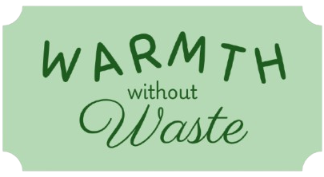

Fast fashion is bad. Its waste is bad. Overwhelming our environment with excess fabric is bad. Our op
shops are overflowing with unwanted donations - and only 20% is good enough quality to be sold. But
nobody’s doing enough to combat this issue.
Energy inefficiency is bad. Our
electricity and forestry industries do so much to keep on top of demand for NZ heating. And it isn’t
even being utilised. Up to 25% of winter heat loss from NZ homes is caused by draughts. These draughts
allow valuable heat created by valuable energy to just float away.
Warmth Without Waste aims to solve two problems at once - energy inefficiency in home heating and wasted
clothing - by creating draught stoppers from unwanted clothing at op shops.